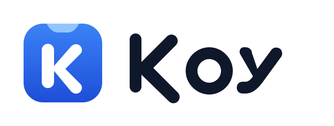

Çoklu ekran
Her monitörde ayrı çentik ve dock, her biri kendi DPI'ında. Yan ekranda tam ekran video, ana ekrandaki Koy'u gizlemez.


Yay fiziğiyle açılan bir çentik ve görev çubuğunun yerine geçen bir dock. Tek süreç, tarayıcı motoru yok, boşta işlemciyi yormaz.
Windows 11 · Ücretsiz ve açık kaynak (GPLv3)
Fareyi üst kenara götür, çentik yayla açılsın. Müzik, takvim, Wi-Fi ve sistem durumu hep aynı yerde.
Çalan müzik, kulaklık pili, işlemci ve bellek, ağ hızı ve hızlı başlat tek bakışta. Müzik Spotify'dan, tarayıcıdan ya da Windows Medya Oynatıcı'dan gelir.
Ay, hafta ve gün görünümü, zamanlayıcı, kronometre ve Pomodoro. Etkinlikler bilgisayarında kalır. Süre bitince çentik titreyerek haber verir.
Wi-Fi, Bluetooth, Rahatsız Etme, ses ve parlaklık. Döşemeleri sürükleyerek istediğin sıraya koy.
Ağları çentikten seç, Windows'taki gibi. Bluetooth cihazlarına da buradan bağlan.
Kapalıyken çentik küçük kalır: müzik çalıyorsa kapak ve dalga, çalmıyorsa saat ve pil. Ses ya da parlaklık değişince kısa bir gösterge çıkar.
Ayrıca Odak, Raf (dosya ve metin sürükle-bırak), Pano ve Sistem sayfaları var.


Yüzen bir kapsül ya da ekran genişliğinde bir çubuk. Windows görev çubuğu gizlenir, işi dock devralır.
Rakipler web motoruyla çalışıyor. Koy doğrudan yerel C# ve WPF, ve bunu ölçerek tutuyor.
Her monitörde ayrı çentik ve dock, her biri kendi DPI'ında. Yan ekranda tam ekran video, ana ekrandaki Koy'u gizlemez.
Koy kapansa ya da çökse bile Windows görev çubuğu birkaç saniyede geri gelir.
Genel kısayolların hepsi özelleştirilebilir. İki kısayol çakışırsa Koy söyler.
Windows temasını izler ya da elle seçersin. Vurgu rengi de senin.
Dil, uygulamayı yeniden başlatmadan anında değişir.
Koy'dan tek adımda kaldırılır. İstersen ayarların korunur, görev çubuğun yerine döner.
Windows 11 (22H2 ve üstü) gerekir. Koy ücretsizdir ve her sürüm GitHub Actions'ta, testler geçtikten sonra üretilir.
Setup tek tıkla kurar ve kendini günceller. Kurulum istemezsen taşınabilir zip var.
Koy henüz kod imzalı değil. Dosyayı yalnız GitHub Releases'tan indirdiysen Ek bilgi, sonra Yine de çalıştır de. Başka bir yerden gelen Koy dosyasını çalıştırma.
Çıkan özeti sürümdeki SHA256SUMS.txt ile karşılaştır.
Get-FileHash .\Koy-win-Setup.exe -Algorithm SHA256